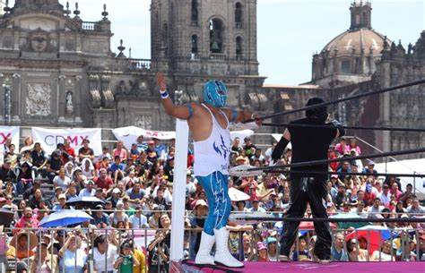

COSTUMBRES Y TRADICIONES
Las costumbres de la Ciudad de México están profundamente marcadas por su rica historia, su diversidad cultural y su mezcla de tradiciones indígenas y coloniales. Aquí te dejo un resumen de las costumbres más destacadas:
1. Celebraciones del Día de Muertos
Es una de las festividades más importantes. En la CDMX, las familias crean altares con fotos, flores de cempasúchil, velas, calaveras de azúcar, y ofrendas de comida para honrar a sus difuntos. Se realizan desfiles, como el famoso desfile del Día de Muertos en el centro de la ciudad, y se decoran lugares emblemáticos como el Panteón de Dolores.
2. Las Posadas
Las posadas son celebraciones religiosas que se realizan en diciembre, previas a la Navidad. Se recrea el peregrinaje de María y José buscando alojamiento, y en cada casa se organizan procesiones y cantos. Al final, se rompe una piñata llena de dulces.
3. La Lucha Libre
Es una tradición muy popular en la ciudad, con luchadores enmascarados y combates espectaculares. Se celebra como un evento familiar, y en el Arena México se realizan los combates más conocidos. Los aficionados disfrutan de la lucha libre como una mezcla de deporte y espectáculo.
4. El Grito de Independencia
Cada 15 de septiembre, la ciudad se llena de festejos para conmemorar la independencia de México. En la noche, el presidente da el Grito de Dolores desde el Zócalo, y la gente celebra con fuegos artificiales, música y comidas tradicionales como pozole y tacos.
5. Los Mercados
Visitar los mercados tradicionales de la CDMX, como La Merced o San Juan, es una costumbre popular. Ahí se venden no solo alimentos frescos, sino también artesanías, flores y productos típicos. Los mercados son centros de convivencia social.
